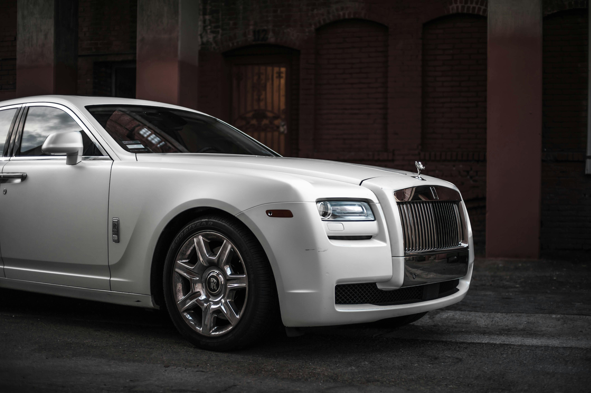
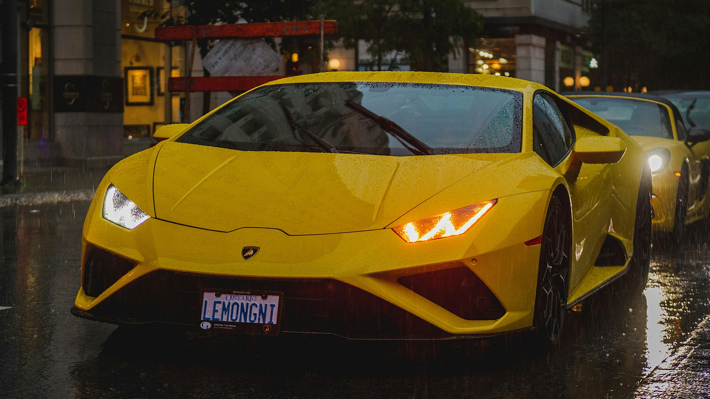

Kakvi su to luksuzni automobili?
Objavljeno: 04.02.2025.
Luksuzni automobili predstavljaju spoj vrhunskog dizajna, napredne tehnologije i iznimne udobnosti. Svaki detalj, od vanjskih linija do interijera, pažljivo je osmišljen kako bi pružio osjećaj prestiža i ekskluzivnosti.
Ono što luksuzne automobile izdvaja od ostalih jest kvaliteta izrade i korištenje vrhunskih materijala poput prave kože, drveta, aluminija i karbonskih vlakana. Takvi materijali ne samo da poboljšavaju estetiku, već i dugotrajnost vozila.
Tehnologija igra ključnu ulogu u luksuznim automobilima. Napredni sustavi pomoći vozaču, digitalni kokpiti, vrhunski audio sustavi i prilagodljive postavke vožnje omogućuju maksimalnu sigurnost i personalizirano iskustvo.
Performanse su još jedan važan aspekt luksuznih vozila. Snažni motori, precizno upravljanje i izuzetna stabilnost pružaju glatku, ali moćnu vožnju, bez obzira na uvjete na cesti.
Zahvaljujući kombinaciji udobnosti, prestiža i inovacija, luksuzni automobili simbol su statusa i uspjeha. Oni nisu samo prijevozno sredstvo, već iskustvo koje naglašava stil života i osobni ukus vlasnika.
Galerija

